騰雲發表會 × Computex
破百萬次
相關口碑操作
TSpace 發表會 × Computex 期間，
16 篇貼文跨 Threads 與 Instagram，
累積 約 1,058,600 次觀看（含 IG 圖文觀看數）。
以下逐篇拆解「在說什麼 · 成效如何 · 對騰雲的意義」，最後彙整總體數據。
這份報告，怎麼看
一句話：這波我們用多個帳號、一套故事，把「騰雲發表會 × Computex」做成社群口碑，總共被看 破百萬次。以下五段帶你看完。
三層聲量槓桿，一個投資敘事
這波刻意不只靠官方帳號發聲，而是用 投資 KOL × 員工夥伴 × 創辦人 × 官方 多層帳號交叉擴散，把一場「產品發表會」講成「資本市場故事」。
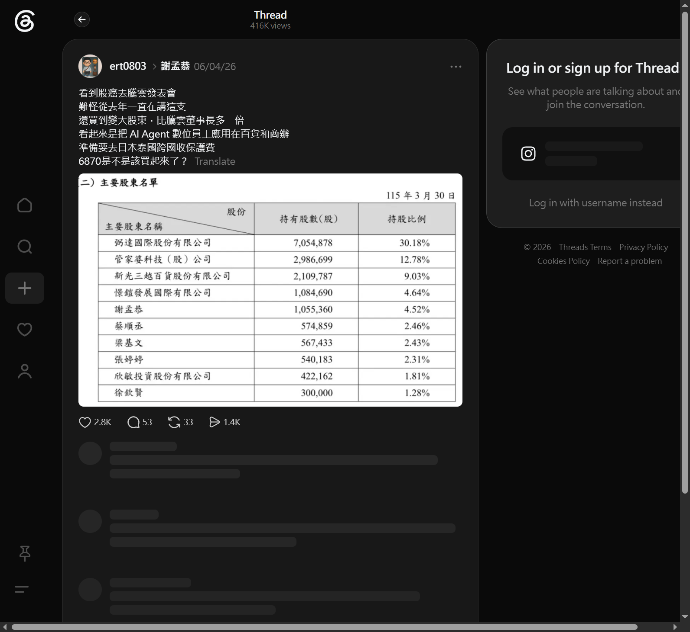
投資圈熱議：416K 觀看的最大入口
一位投資人發文：看到財經 KOL 股癌現身騰雲發表會、推測加碼成大股東，並點名 AI Agent 要進百貨商辦、跨足日泰。（第三方觀點，非股癌本人發文）
416K 觀看、1.4K 分享，單篇就佔全部觀看約四成，把 6870 直接推到投資人眼前。
「成大股東＋海外擴張＋AI 收租金」——用資本市場聽得懂的語言重新包裝技術。
由投資人自發、非品牌帳號，說服力與擴散力都勝過官方自述。
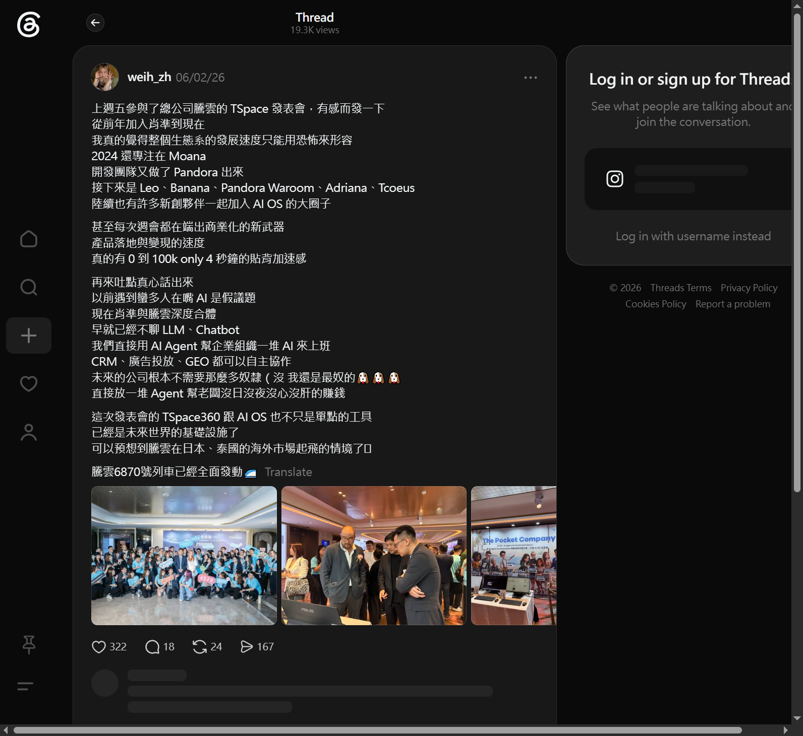
內部視角：生態系速度的真實感
夥伴第一視角回顧從 Moana、Pandora 到 Banana、Adriana 的擴張，強調 Accucrazy 與騰雲深度整合，AI Agent 已能自主協作 CRM／廣告投放／GEO。
員工現身說法，傳遞「組織真的在高速成長」的可信感與向心力。
Moana→Pandora→Banana→Adriana 連發，建立技術縱深的整體印象。
高分享代表同業與潛在人才主動轉傳，是招募與口碑的隱形紅利。
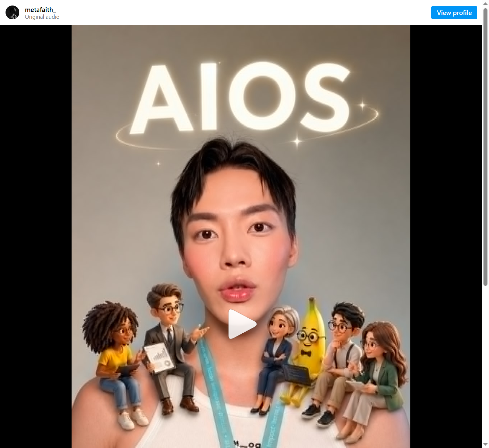
最強教育型內容：Pandora 171K 觀看
以「文組生也能跟黃仁勳用同一個模型」破題，講述從「買 AI」到「建 AI OS」，介紹 Pandora 如何讀懂文化與情緒，並帶出政府 AI 轉型補助。
171K 觀看、64 則多為 B2B 決策者的高品質留言，是把陌生人變客戶的主力。
「你的護城河在哪？」先打中老闆焦慮，再用 Pandora 收尾。
補助資訊＋私訊信箱，把觀看數導成 leads，不只是曝光。
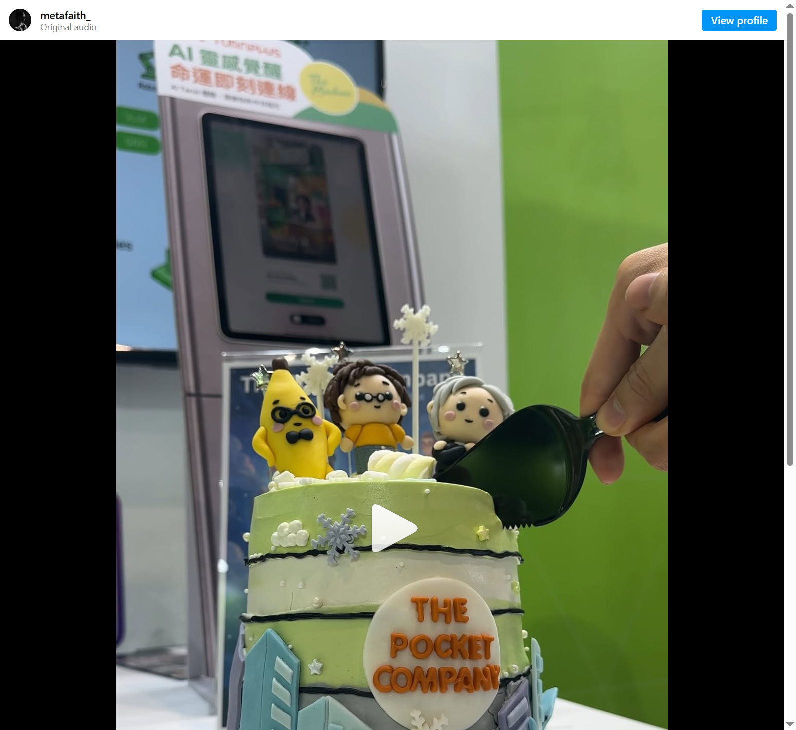
借勢 NVIDIA：5-Layer Cake 類比
以 NVIDIA「5-Layer Cake」對比 The Pocket Company 的五層架構，結合 Computex 與黃仁勳合影，趣味化技術定位。
套用黃仁勳的框架，一句話把自家技術定位拉到同級別。
迷因化包裝降低硬技術理解門檻，適合大眾擴散。
Banana 等角色露出，持續累積品牌記憶點。
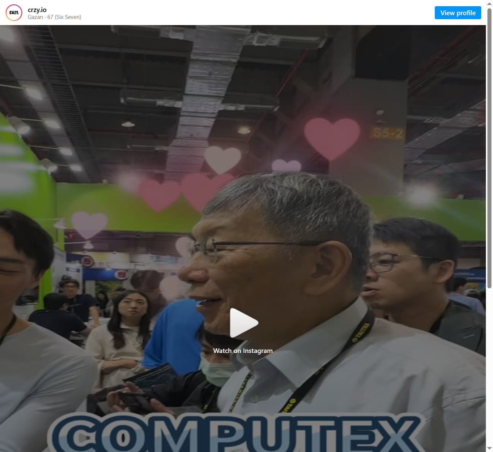
Computex 落幕回顧：官方紀錄
Computex 2026 落幕 recap，主打 Accucrazy 在 NVIDIA Inception 展位的未來感機器人、AI 棋盤、Peigo AI UGC 體驗（含柯文哲到場）。
官方 recap，本質是存證型內容，觸及天花板較低（725）。
體驗豐富卻沒有單一爆點，適合當佐證素材、不適合扛引流。
同樣素材交給 KOL／員工帳號二次發布，觸及可翻數倍。
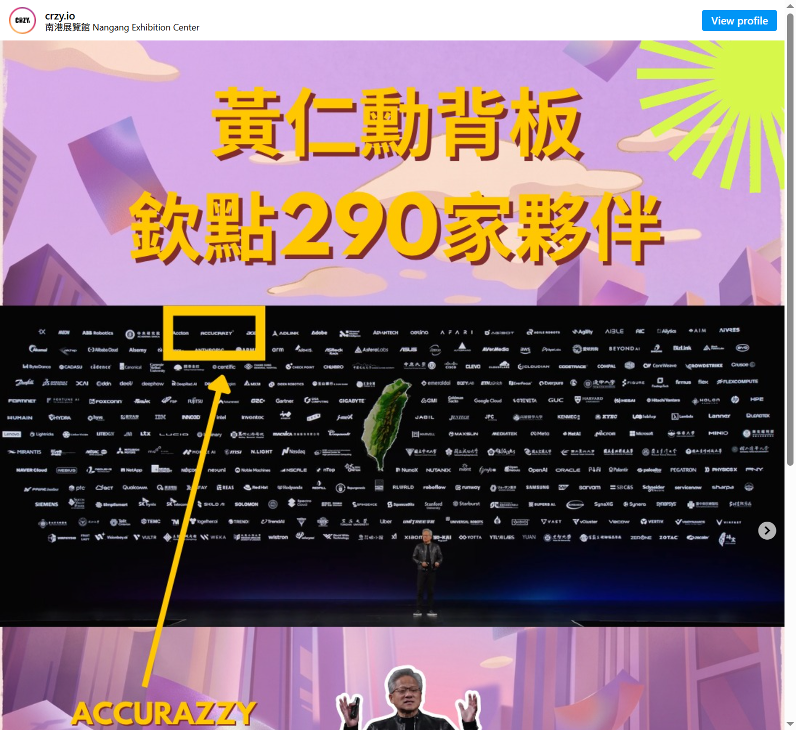
國際背書：登上 NVIDIA 官方背板
宣布 Accucrazy 登上 NVIDIA 官方展示背板（黃仁勳欽點 290 家夥伴），成為全台少數受 NVIDIA 認可、聚焦 AI Marketing 的團隊。
登上 NVIDIA 290 家夥伴背板，對客戶與股東都是現成的信任狀。
只有 1,348 觀看，官方帳號擴散力遠輸創辦人／KOL。
同題改成短影音、由創辦人帳號轉發，觸及上看數萬。
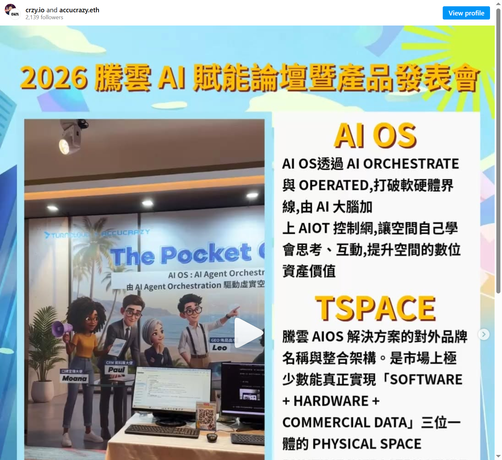
核心官宣：This is AI as Solution
正式發布 TSpace——從智慧商務、智慧場域到數位營運，並感謝 Google Cloud、全國電子、台達電、泰國 IoT Association 等夥伴見證。
TSpace 從智慧商務到數位營運的核心官宣，是整波的主軸源頭。
Google Cloud、台達電、全國電子、泰國 IoT 協會同框，一次堆滿信任。
7,038 觀看證明重點官宣即使是圖文也有聲量。
產品自證：Banana 剪出發表會精華
展示用 Banana 把冗長的 TSpace 發表會影片自動剪輯成精華，凸顯 AI 內容產製能力（影片主視覺：AI Agent 協作架構）。
用自家 AI 剪自家發表會，最好的產品 demo 就是自證。
6,656 觀看，互動多為「這要怎麼做到」的高意向提問。
延伸成 before／after 系列，持續強化 Banana 認知。
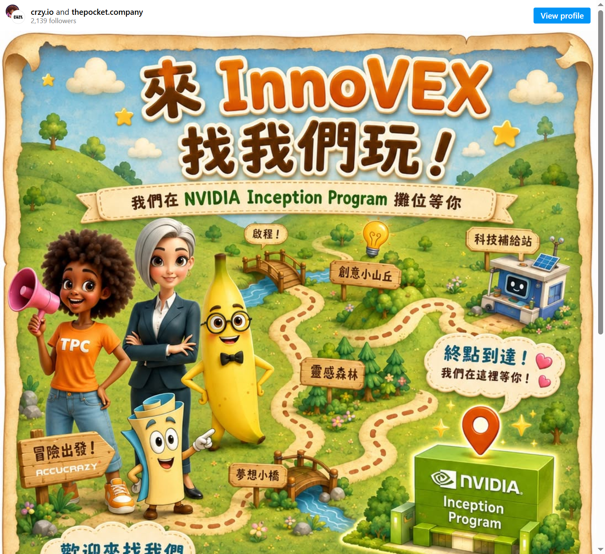
活動前導：Inception 攤位預告
預告 Accucrazy 進駐 InnoVEX × NVIDIA Inception 攤位，帶 Pandora、Moana、Banana Split 與現場互動，談 AI 如何走進行銷現場。
活動前導貼文，任務是衝現場人流，趣味插畫帶來 8,206 觀看。
訊息清楚但活動一過價值就歸零，不具長尾。
預告類內容集中時段付費投放＋限時動態效益最高。
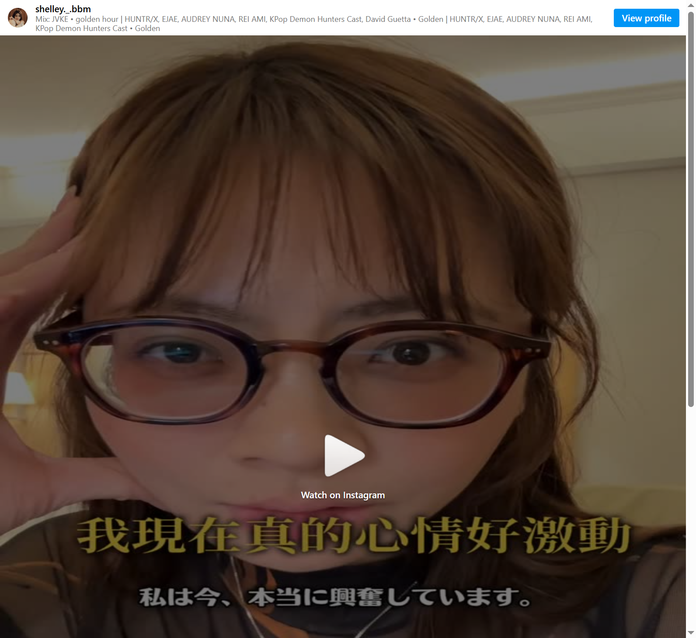
品牌溫度：第九年，牆上唯一行銷
夥伴感性發文，慶祝 Accucrazy 邁入第九年、成為 NVIDIA 牆上唯一的行銷公司，感謝團隊與創辦人。
員工感性發文，用溫度換來高於官方帳號的觸及。
「整面牆唯一的行銷公司」把榮譽感變成品牌標籤。
員工自發擴散，是幾乎零成本、卻最可信的聲量來源。
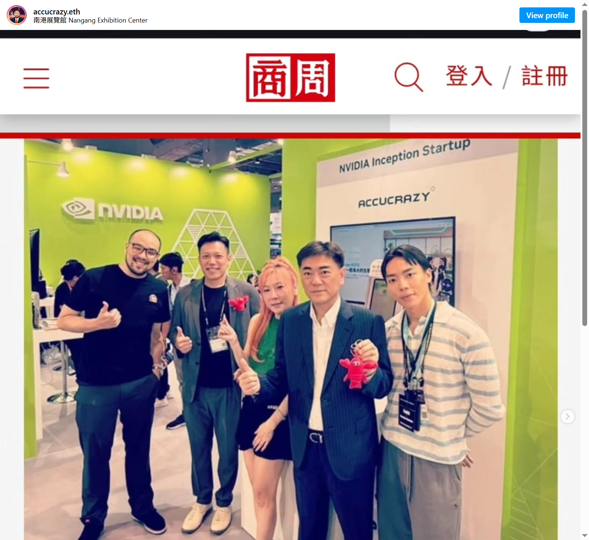
Ian 親述：登上《商業周刊》的 Magical 一週
Ian 第一人稱回顧「最 Magical 的一週」：登上 NVIDIA 官方背板、進駐 Inception 展位全勤、文章獲《商業周刊》全文轉載、現場向柯文哲展示 Agentic AI。
第一人稱把多個里程碑串成一個品牌信仰故事，9,931 觀看。
文章獲《商業周刊》官方全文轉載，等於財經媒體幫忙背書。
現場向柯文哲展示 Agentic AI，增加話題與二次曝光。
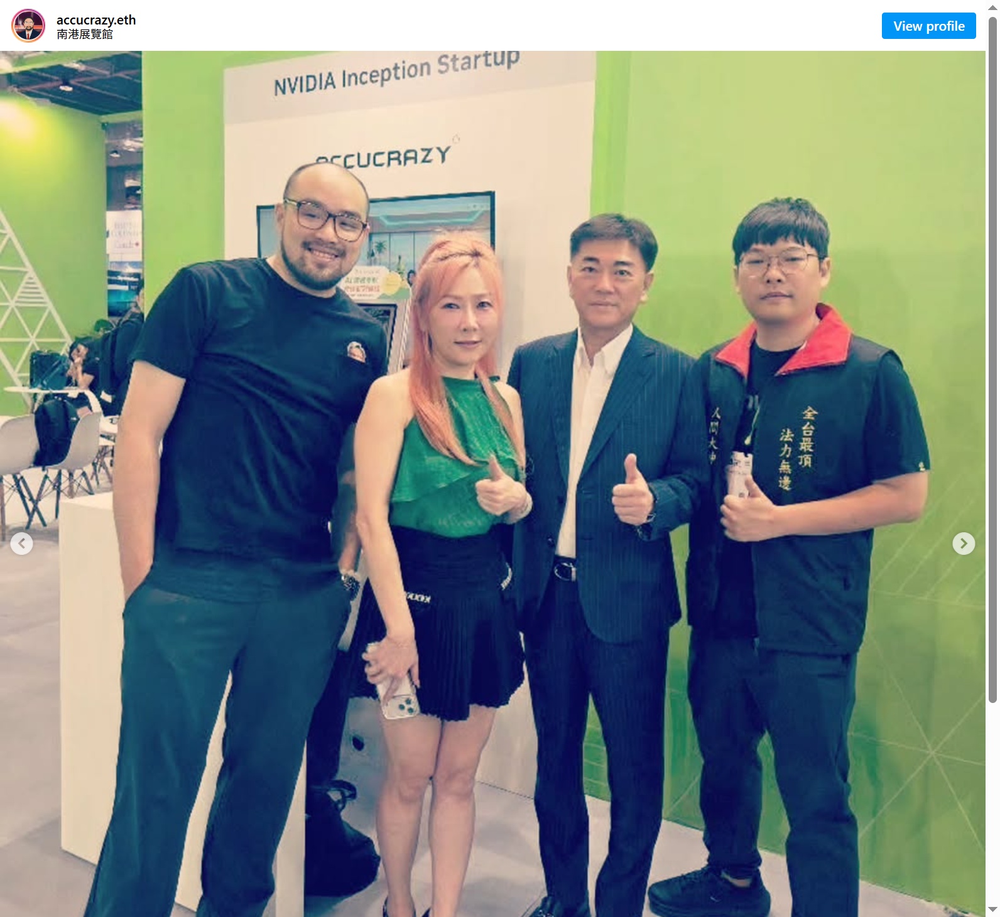
隱藏爆款：334K 觀看的十年長文
Ian 以 2013 年華碩 Computex 總召、ROG RAIDR SSD 的硬體往事，對比 NVIDIA RTX Spark 統一記憶體架構，談 Jensen 如何把 PC 產業話語權搶回——獲《商業周刊》官方轉載放大。
334,278 觀看，僅次於投資人熱議，靠深度而非流量公式。
媒體轉載讓它持續被看見，59.7% 觀看來自非粉絲。
硬體研發內幕＋產業史觀，換到1,934 讚、77 留言的深度共鳴。
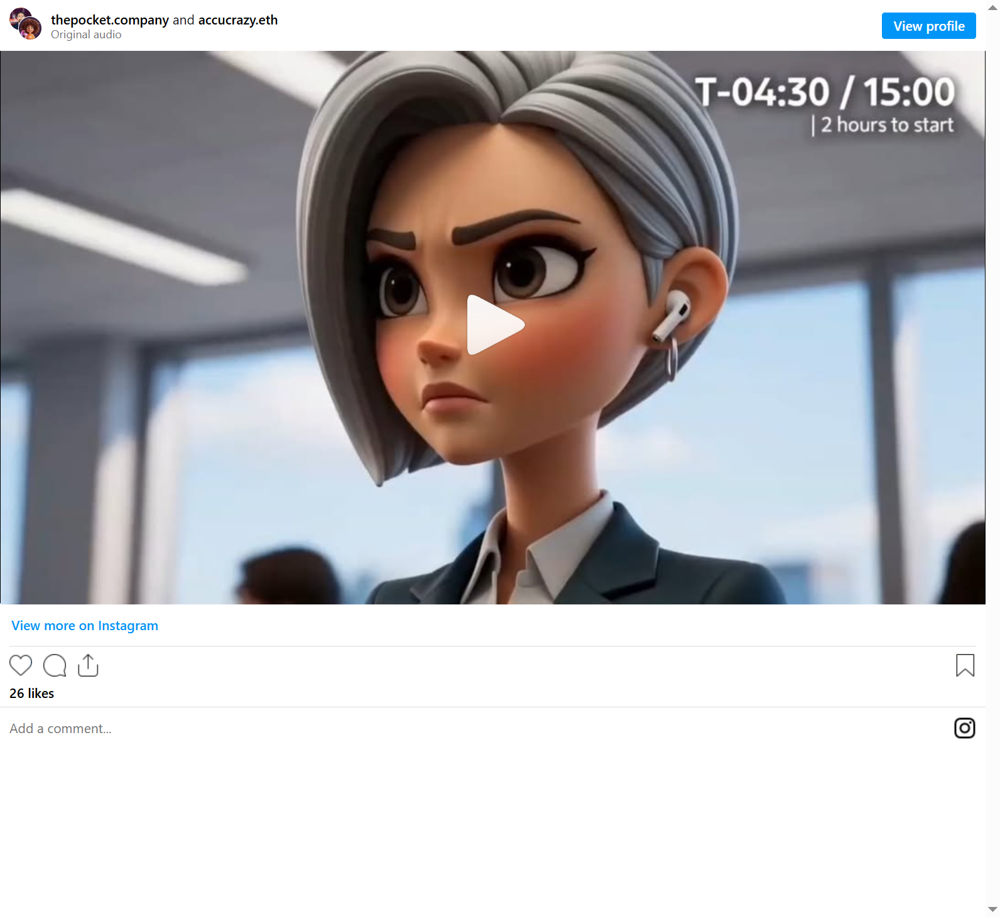
發表會預熱：企業第二大腦 倒數
The Pocket Company 自家 3D 角色登場的發表會倒數預熱短片，主打 AI Agent 成為企業「第二大腦」、TSpace 發表會 T-minus 倒數。
用自家 3D 角色倒數，替發表會預熱、養期待。
thepocket.company 僅 220 追蹤，1,807 觀看是正常起步。
倒數鉤子把粉絲引向發表會現場與直播。
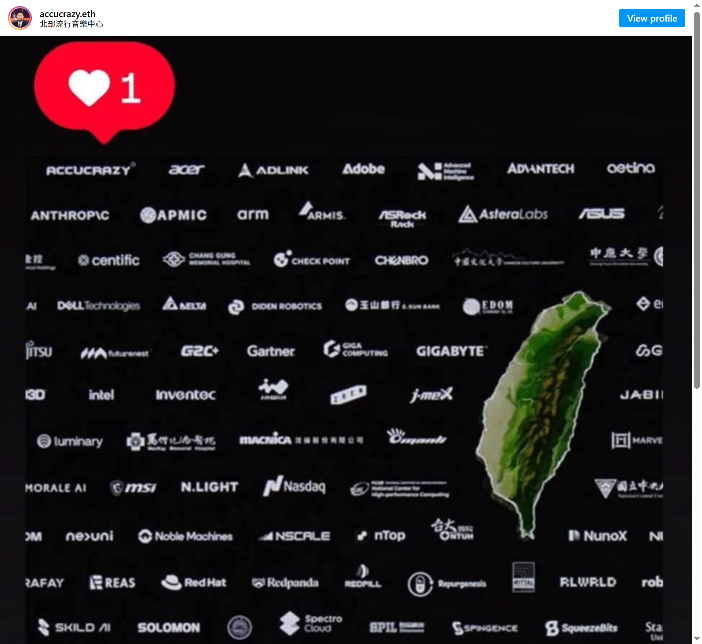
Logo 上 NVIDIA 牆：A 排第一、Acer 旁
Ian 宣布 Accucrazy Logo 登上黃仁勳 Keynote 大螢幕（Anthropic 上方、Acer 旁），並正式宣布 Accucrazy 成為騰雲 TSpace 最核心的 AI 大腦夥伴。
Logo 排在 A 第一、緊鄰 Acer／Anthropic，等同國際級認證。
騰雲出硬體骨架、Accucrazy 出 Fine-tuning 靈魂，把合作講成壁壘。
雲端 SOTA 或地端 VIN 私有模型彈性選，直球打資料隱私。
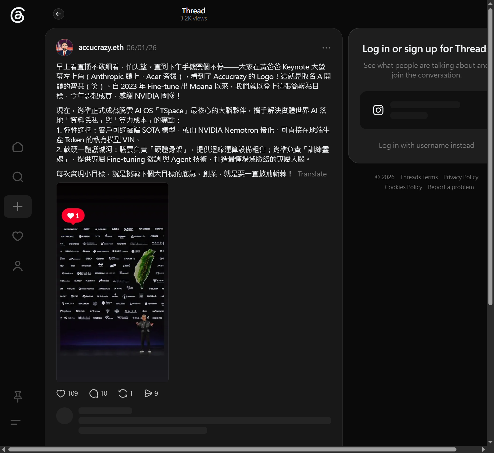
跨平台再放大：NVIDIA 牆宣布的 Threads 版
Ian 在 Threads 同步宣布 Logo 登上黃仁勳 Keynote 大螢幕，並說明 Accucrazy 成為騰雲 TSpace 最核心大腦：騰雲負責硬體骨架、Accucrazy 負責 Fine-tuning 與 Agent；客戶可選雲端 SOTA 或地端 VIN 私有模型。
同一則宣布的 Threads 版本，跨平台不重複地多收一波觸及。
騰雲硬體骨架 × Accucrazy 訓練靈魂，清楚交代軟硬分工與護城河。
同題在 Threads 多收 3,200 觀看、109 讚，是純增量。
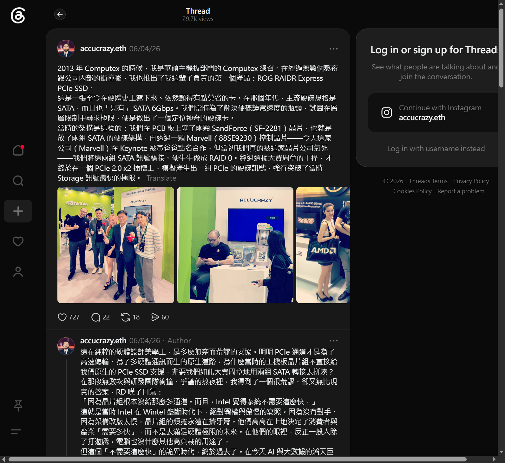
長文雙胞胎：ROG 十年往事在 Threads 收 29.7K
與 334K 商周長文同題：Ian 回顧 2013 年華碩 Computex 總召、ROG RAIDR PCIe SSD 的硬體工程往事，對照今日 NVIDIA、Marvell 在 Keynote 的合作，談 PC 產業話語權的世代翻轉。
與 IG 334K 長文同題，在 Threads 再收 29.7K 觀看、727 讚、60 分享。
ROG SSD 硬體往事對照 NVIDIA RTX，用產業史觀換到高共鳴。
同一篇好內容在 IG、Threads 都能爆，值得固定產製、雙平台分發。
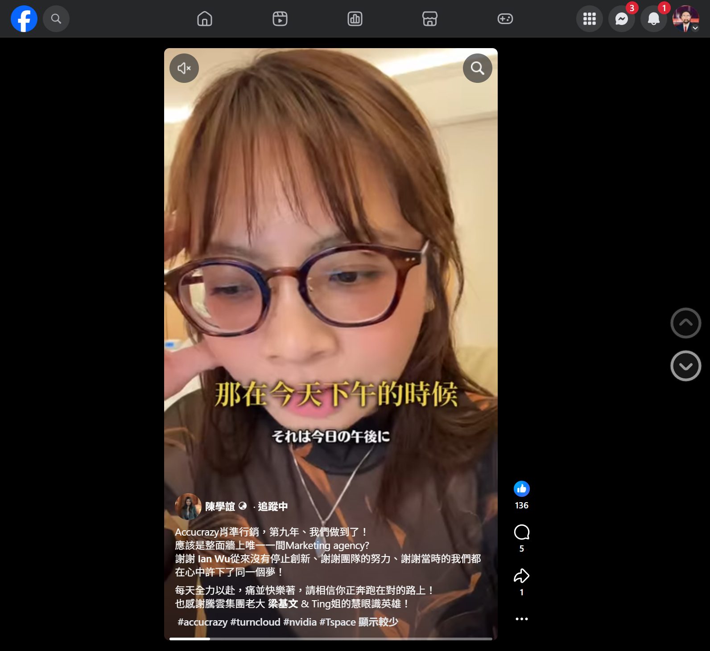
跨到 Facebook：第九年的員工同題擴散
陳學誼在 Facebook 發 Reel 影片，與 IG「第九年・牆上唯一行銷」同題：慶祝 Accucrazy 第九年、感謝 Ian Wu 與騰雲集團梁基文。#accucrazy #turncloud #nvidia #Tspace
同一個「第九年」故事從 IG 延伸到 Facebook，多一個平台、多一圈觸及。
Facebook 未公開顯示觀看數，故本篇不計入總觀看，僅呈現跨平台擴散。
員工願意在自己的 FB 上掛名宣傳，是併購後文化與向心力最真實的訊號。
觀看數計算表：16 篇加總
統一標準：Threads／Reels／IG 圖文一律採平台觀看數，依平台分組小計後加總。
怎麼加的
- Threads 468,200
- ＋ IG Reels 223,288
- ＋ IG 圖文 367,079
- ＝ 1,058,567 次觀看
重點洞察
- 兩大引擎：投資人 416K ＋ 商周長文 334K，合計 逾 75 萬（約 71%）
- 深度長文跨平台都吃香：同題 IG 收 334K、Threads 再收 29.7K
- 其他：總讚 ≈ 9,100、留言 300
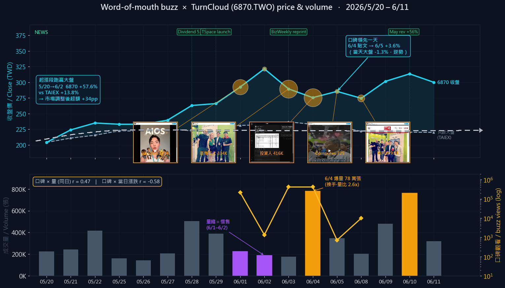
口碑 × 新聞 × 股價：市場調整 × 中介鏈 × 領先一天
每天漲跌減大盤＝超額報酬。5/20→6/2 漲 57.6%、大盤僅 13.8%，扣掉大盤仍多賺 +34pp。
口碑先點燃換手量；6/4 投資人 416K 當天爆量 78 萬張（量比 2.6x），上漲段反而量縮＝惜售。
量能隔天才轉成超額報酬，6/5 逆大盤（−1.3%）上漲；6/10 營收日同樣逆勢。相關不等於因果、非投資建議。
從「股市代號 6870」 到「被討論的 AI 品牌」
同一個 Pandora、同一套公開社群抓取標準 ── 過去 16 個月累積 7,068 聲量，TSpace 發表後 6 週就做到 5,131（達 73%），月均聲量提升約 8 倍，討論主體整個換掉。
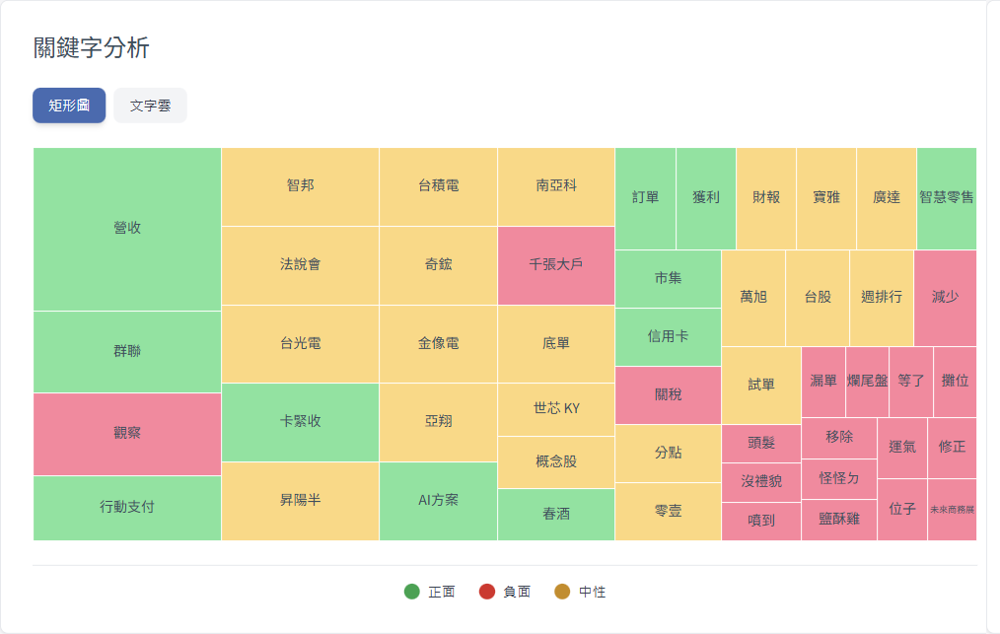
發表會
品牌進場
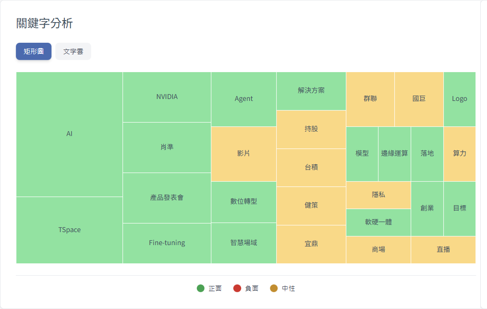
一場發表會，
突破 100 萬次被看見。
不是靠單一帳號硬推，而是讓投資圈、員工、夥伴、創辦人
用各自的聲音，說同一個騰雲的故事。
第三方信任 × 影音擴散 × 投資敘事——
這就是這波聲量的引擎。